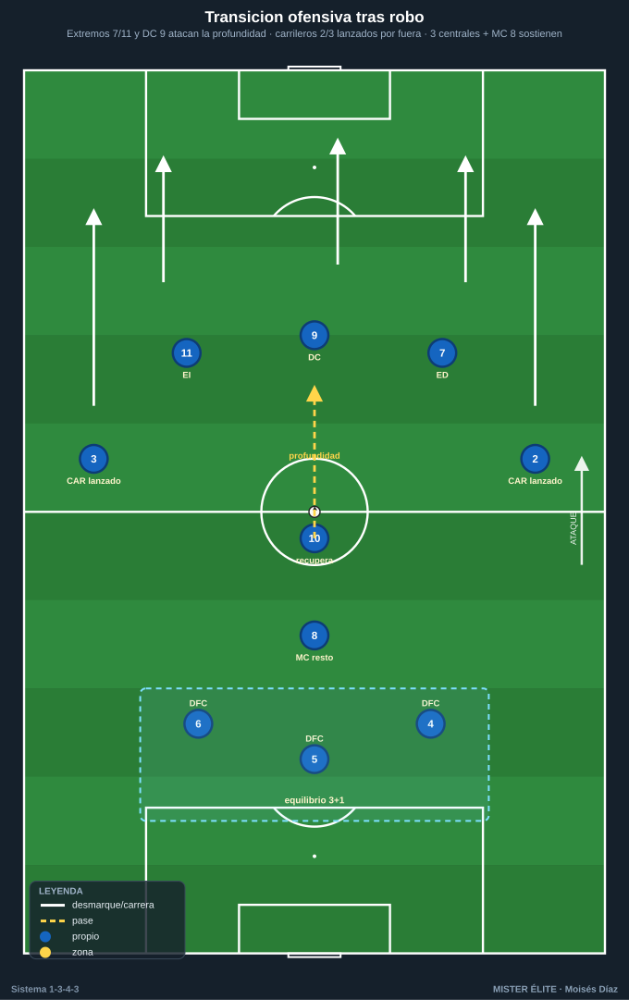
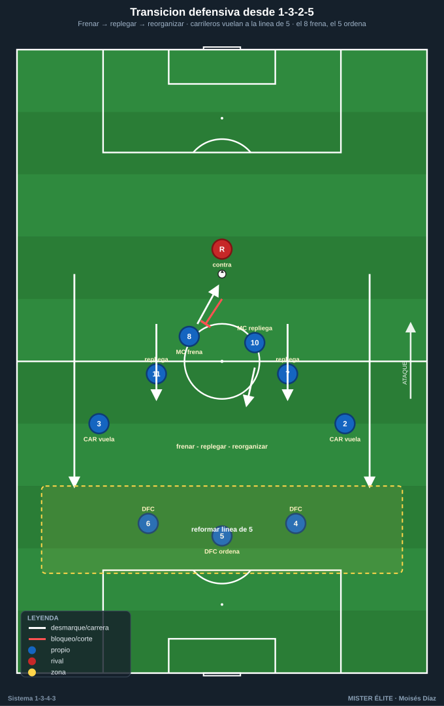
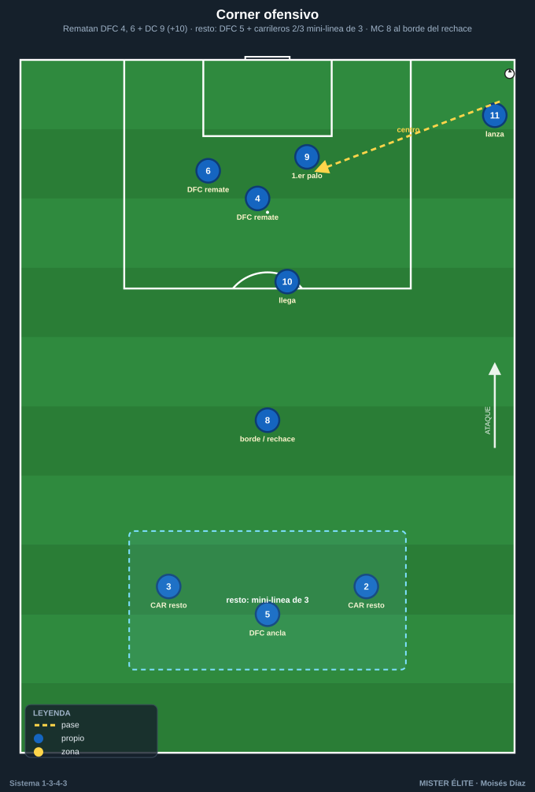

Módulo 04 · Transiciones y balón parado del 1-3-4-3
Convención: POR 1 · DFC 4-5-6 (5 = líbero) · CAR 2/3 · MC 8/10 · ED 7 · DC 9 · EI 11. La transición defensiva es la fase que define al sistema. Con los carrileros arriba (1-3-2-5), tras pérdida quedan 3 centrales + 8 ante el contragolpe. Hay que entrenarla más que ninguna otra fase.
1. Transición ofensiva (recuperación → ataque)

- Carriles de contraataque: tridente + carrileros lanzados. Tras robo, salida rápida por los extremos 7/11 (ya altos en la mutación) y el 9 atacando la profundidad.
- Carrileros 2/3 se incorporan como carrileros lanzados por fuera para dar anchura y centro inmediato (3-4 atacantes en 3-4 segundos).
- 10 acompaña la segunda oleada; 8 y los 3 centrales sostienen el equilibrio (no todos se lanzan).
- Principio: profundizar primero (vertical al espacio), asociar después solo si la conducción se frena.
2. Transición defensiva (pérdida → repliegue)

El riesgo del 1-3-2-5: tras pérdida quedan 4-5-6 + 8 ante el contragolpe. Secuencia obligatoria:
- Presión inmediata al balón (contrapresión) con los hombres cercanos (extremo + carrilero del lado de pérdida) durante los primeros segundos → frenar y ganar tiempo.
- Recuperar la línea de 5: los carrileros 2/3 repliegan a toda velocidad para reformar la línea de 5 (1-5-2-3 / 1-5-4-1) con los 3 centrales.
- Extremos 7/11 repliegan a ayudar a sus carrileros / formar segunda línea.
- 8 tapa el carril central (espalda de la línea de 3) y orienta el repliegue; 5 (líbero) organiza coberturas y decide si saltar o esperar.
- Frenar–replegar–reorganizar en ese orden: si no se puede robar de inmediato, frenar la conducción rival y dar tiempo a que carrileros y extremos vuelvan.
3. Balón parado ofensivo

Córners ofensivos — aprovechar la altura y número de los centrales + DC 9: - 3-4 rematadores potentes: los dos centrales laterales DFC 4 y 6 + DC 9 (+ 10 llegando), con bloqueos y movimientos cruzados. El 9 ataca primer palo/penalti; los centrales, el segundo palo. - 8 al borde del área para el rechace y primer freno de la contra. - Vigilancias obligatorias (resto de córner): DFC 5 (líbero) + los dos carrileros 2/3 atrás como mini-línea de 3. El 5 NO sube a rematar: es el ancla de seguridad; suben 4, 6 y 9.
Faltas laterales/cercanas: lanzamiento al área con la altura de los centrales; opción de saque ensayado en corto (carrilero–extremo) para centro de mejor ángulo.
Saques de banda en campo rival: aprovechar la amplitud del carrilero + apoyo del extremo/10 (pared para progresar).
4. Balón parado defensivo
- En córner/falta en contra, los carrileros vuelven a la línea de 5.
- Marcaje mixto: zona en 1er palo y penalti + hombre a los rematadores peligrosos.
- Un hombre en cada palo.
- Vigilancia para el contraataque propio: el 9 + un extremo quedan arriba como amenaza de contra.
5. Puntos clave de coaching (transiciones)
- La transición defensiva define el sistema: contrapresión inmediata → recuperar la línea de 5 → frenar/replegar. Entrénala más que ninguna otra fase.
- No lanzar a todos en transición ofensiva: 3 centrales + 8 sostienen siempre el equilibrio (resto defensivo permanente).
- ABP = ventaja estructural: la altura de los 3 centrales es un arma en córners; pero deja siempre vigilancia (5 + carrileros) por el contragolpe.
Ideas clave
- Profundizar primero, asociar después en la transición ofensiva.
- Frenar → replegar → reorganizar en la transición defensiva (orden fijo).
- Los carrileros vuelan atrás a reformar la línea de 5; el 8 frena, el 5 ordena.
- En córner ofensivo suben 4, 6, 9 (+10); el 5 + carrileros quedan de resto (el 5 nunca sube).
- En córner defensivo, carrileros a la línea de 5, marcaje mixto, y 9 + extremo arriba para el contra.
Errores comunes
- Lanzar a todo el equipo al contraataque: te quedan 3 atrás contra la contra-contra.
- Replegar sin frenar antes: el rival corre en campo abierto por el carril del carrilero.
- El carrilero no esprinta atrás tras la pérdida: la línea de 5 no se forma a tiempo.
- Subir al 5 a rematar el córner: te quedas sin ancla de seguridad para el contragolpe.
- No dejar a nadie arriba en el córner defensivo: renuncias a la amenaza de contra y el rival sale sin riesgo.